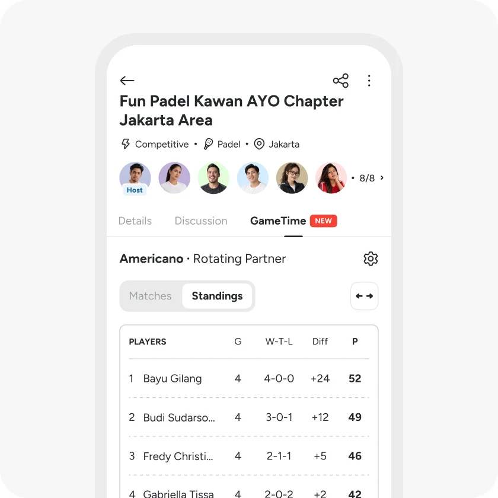
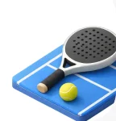
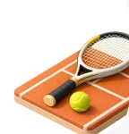
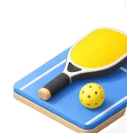
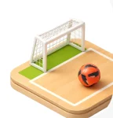

Scoring (GameTime)
Atur Pertandingan, Gametime yang urus Perhitungan!
Jalankan Americano, Mexicano, atau format permainan pilihanmu. Masukkan pemain dan lapangan, lalu Scoring menyusun ronde dan pasangan secara otomatis, mencatat skor, serta memperbarui klasemen secara langsung.
Buat Scoring Kamu

Tennis
Badminton Mini Soccer Sepak Bola Basketball Pickleball
Futsal
Tenis Meja Squash VolleyKenapa Scoring
Kenapa host memakai Scoring untuk main bareng
Selenggarakan Game yang Seru
Pilih pemain, lapangan, dan format permainan. Scoring akan menyusun ronde dan pasangan secara otomatis—tanpa perlu mengatur jadwal secara manual atau melakukan perhitungan yang rumit.
Bermain Sesuai Gaya Kamu
Ganti-ganti pasangan, gunakan pasangan tetap, atau bermain tunggal. Pilih format yang sesuai dengan kebutuhan grup dan jenis permainan yang ingin kamu selenggarakan.
Setiap Pertandingan Berarti
Masukkan skor setiap selesai bertanding dan lihat klasemen diperbarui secara langsung, sehingga semua pemain dapat mengikuti jalannya persaingan.
Jadikan Permainan Lebih Berkesan
Bagikan klasemen akhir dan banner pemenang melalui WhatsApp atau Instagram, atau unduh hasil pertandingan dalam format PDF.
Pilih format yang pas untuk komunitasmu.
Tiga format, empat cara memasangkan pemain.
Americano
Round robin: setiap pasangan bertanding melawan semua pasangan lain.
Mexicano
Berdasarkan peringkat: pemain dipasangkan sesuai posisi klasemen, ronde demi ronde. Pilih pairing Classic atau Modern.
Custom
Bebas atur format permainan sesuai dengan gaya bermainan komunitasmu.
Bergilir, tetap, campuran, atau singles
Ganti pasangan setiap match, tetap dengan pasangan yang sama, campur pasangan dari dua grup, atau main singles.
Semua Fitur, Sepenuhnya Gratis.
Jalankan Americano, Mexicano, dan game dengan format pilihanmu. Nikmati fitur pengaturan pasangan otomatis, pencatatan skor secara langsung, hingga klasemen akhir—semuanya gratis di AYO.
Siap dalam satu layar.
Cabor, mode, lapangan, dan pemain, lalu lanjut.
Cabor & mode
Pilih cabor, lalu Kompetitif atau Santai. Hasil padel kompetitif dihitung ke PadelLevels.
Lapangan
Atur jumlah lapangan yang dipakai dan beri nama setiap lapangan.
Pemain & tim
Masukkan minimal 4 pemain, atau beri nama tim untuk doubles.
Aturan peringkat
Pilih cara klasemen diurutkan sebelum ronde pertama.
Pastikan Setiap Ronde Berjalan Lancar
Pantau pembagian lapangan, masukkan skor per set, dan sesuaikan permainan selama berlangsung—semuanya dalam satu tempat.
Ronde Tersusun Rapi per Lapangan
Lihat setiap pertandingan berdasarkan lapangan, termasuk pemain yang sedang bertanding dan pemain yang menunggu giliran.
Input Skor per Set dengan Mudah
Masukkan skor setiap set menggunakan papan angka khusus, dan tambahkan foto pertandingan untuk mengabadikan momen.
Lakukan Penyesuaian Saat Dibutuhkan
Koreksi skor dan nama tim, tukar pemain, atau acak ulang pasangan sebelum skor pertama dimasukkan.
Kendali Penuh atas Sesi Permainan
Tambahkan ronde selagi waktu memungkinkan, atau akhiri sesi untuk menetapkan hasil akhir.
Klasemen yang dipercaya semua pemain.
Ter-update setiap skor masuk, diurutkan sesuai aturanmu.
Klasemen live
Lihat jumlah pertandingan, kemenangan, hasil imbang, kekalahan, selisih poin, dan total poin setiap pemain. Klasemen diperbarui otomatis setiap kali skor dimasukkan.
Aturan Peringkat yang Fleksibel
Pilih dan atur urutan kriteria peringkat, mulai dari total poin, jumlah kemenangan, selisih poin, selisih set, hingga hasil pertemuan langsung.
Sistem Poin Liga yang Fleksibel
Tentukan jumlah poin untuk kemenangan, hasil imbang, dan kekalahan sesuai aturan liga kamu (misalnya, 3 / 1 / 0).
Rayakan hasilnya.
Bagikan klasemen, hasil match, dan juara dalam sekali ketuk.
Bagikan klasemen & match
Kirim ke WhatsApp, Facebook, atau Instagram (feed atau stories), atau salin link.
Unduh sebagai PDF
Unduh klasemen sebagai PDF untuk grup komunitasmu.
Banner juara
Pemenang mendapat banner Americano atau Mexicano: perorangan, pasangan, tim, atau klub.
Siap Mengadakan Game Berikutnya?
Buat Scoring melalui aplikasi AYO atau tambahkan Scoring ke sesi Open Play kamu.
Coba Scoring